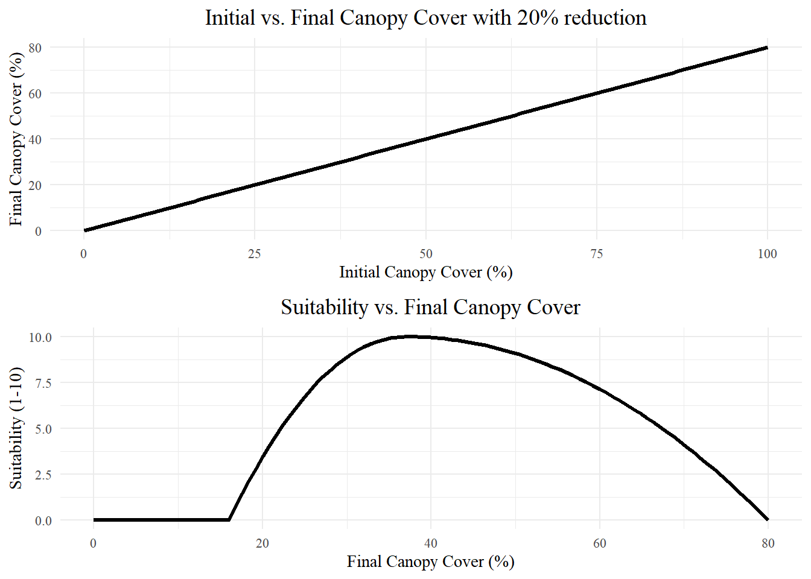

![]()

Mapping landscape suitability for forest thinning to reduce evapotranspiration and enhance groundwater recharge in Arizona
Abstract
Literature on the relationship between forest thinning and water yield was used to develop suitability criteria to map where forest treatment is most likely to enhance groundwater recharge across the Mogollon Rim Ranger District in the Coconino National Forest. Rechage in the region is ephemeral and focused in periods of snowmelt and locations of enhanced permeability when soil moisture exceeds threshold levels. Our approach combines thematic maps of criteria such as average precipitation, snow dominance, slope, aspect,landscape morphology, forest density, lithology and hydrologic soil type into a GIS-Multi-Criteria Decision Making model. Pairwise comparisons were made between criteria, and Analytic Hierachy Process was used as a weighting method.
Keywords
suitability mapping, Forest thinning, Water yield, groundwater recharge, GIS-MCDM, AHP
1 Introduction
Since 2000, the Colorado River Basin has been in the midst of a historic drought (Meko et al., 2022; Williams et al., 2022). Average temperatures increased by 0.9ºC from 2000 - 2014, and streamflow in the Colorado River has declined by 19% below the 1906-1999 average (Hogan and Lundquist, 2024; Udall and Overpeck, 2017). Extreme hydroclimate events such as droughts, heatwaves, and floods have more than doubled in frequency since 2010 (Bennett et al., 2021). Simultaneously, like much of the inter-mountain west, Arizona has experienced rapid population growth, increasing the demands on already strained water supplies. Reductions in streamflow have increased reliance on groundwater pumping, while groundwater levels have declined for decades in much of the state (Tadych et al., 2024).
Concurrently, western forests are at increasing risk from catastrophic wildfires–an emerging driver of runoff change that will increase the impact on the water supply (Williams et al., 2022). Forest structure in the Ponderosa Pine forests of Northern Arizona and New Mexico has changed significantly post-Euro-American settlement due to grazing, logging, wildfire exclusion, and other factors (Covington and Moore, 1994; Friederici, 2013). As a result, many forests are overstocked relative to pre-settlement conditions, increasing the risk of catastrophic wildfire (Allen et al., 2002). Rising temperatures and related droughts have contributed to extensive tree mortality from wildfire, disease, and insect infestation (Berner et al., 2017). Warming temperatures have tripled the frequency and quadrupled the size of wildfires in recent decades (Williams et al., 2022). Increasing heat has pushed many low-elevation conifer forests past climate thresholds, creating conditions less suitable for tree regeneration (Davis et al., 2019).
Landscape-scale forest restoration efforts have been planned or implemented across much of Arizona. For example, the Four Forest Restoration Initiative (4FRI) includes plans for restoration across over 1 million hectares of Arizona’s forests (Schultz et al., 2012). The primary goal of restoration efforts is to reduce wildfire risk (Allen et al., 2002; Friederici, 2013). However, numerous studies have linked forest treatments to increased water yields in semi-arid forests and have emphasized the role of forest restoration in improving hydrologic services and increasing water availability (Baker, 1986; Bosch and Hewlett, 1982; Gottfried, 1991; Hibbert, 1979; Moreno et al., 2015; O’Donnell et al., 2018; Schenk et al., 2020; Simonit et al., 2015; Smerdon et al., 2009; Wyatt et al., 2015; Wyatt, 2013a; Zou et al., 2010).
The connection between forests and water supplies is well documented. Around 65% of surface water in the western states originates from forested lands, which cover just 29% of the land area (Brown et al., 2005). The average annual precipitation in the Lower Colorado River Basin is about 330 \(mm\), and only about 10 \(mm\) of that precipitation becomes streamflow, while much of the rest is lost to evapotranspiration (Zou et al., 2010). Regional studies have found that up to 90% of annual precipitation in semi-arid forests is lost evapotranspiration (Dore et al., 2012; Ha et al., 2015; Hibbert, 1979; Yaseef et al., 2010). Sublimation has been shown to remove 10 - 90% of snowfall in the Colorado River Basin, while the remaining snowmelt provides over 80% of streamflow to the Colorado River (Lundquist et al., 2024). Over half of streamflow from the Upper Colorado River basin comes from groundwater sources primarily recharged by snowmelt (Miller et al., 2016). Therefore, small reductions in evaporative losses could have out-sized impacts on available water supplies, particularly enhancing groundwater recharge in terrains underlain by karst lithology (Hibbert, 1979; Wyatt, 2013b).
While the connection between forest treatment and water yield is well documented, the response of forests to treatments is complex and non-linear and differs across forest types, with treatment level, and along aspect and elevational gradients (Biederman et al., 2022a; Del Campo et al., 2022; Hibbert, 1979; Moore and Wondzell, 2005; Zou et al., 2010). Regardless of the potential for increased water yield the enhancement of groundwater recharge rarely, if ever, ranks among the primary motivations for forest treatment even among projects with the stated goal of improving watershed health (Allen et al., 2002; Filoso et al., 2017; Friederici, 2013; O’Donnell, 2016; Stanturf et al., 2014). This study examines forest restoration through the lens of groundwater recharge enhancement and identifying potential recharge zones. All else held equal, we map suitability for forest thinning with the goal of enhancing recharge. Suitability maps like these may complement (or supplement) existing frameworks for prioritizing landscape-scale forest management.
Suitability mapping, and particularly GIS-based Multi-criteria decision making (GIS-MCDM), is widely used to map potential recharge zones and areas suitable for Managed Aquifer Recharge (MAR), but to our knowledge, it has not yet been implemented to map recharge enhancement potential through forest thinning (Fathi et al., 2021; Raja Shekar and Mathew, 2023). Pairwise comparisons were made between criteria including average precipitation, snow dominance, slope, aspect, landscape morphology, forest density, lithology, and hydrologic soil type, and the Analytic Hierarchy Process (AHP) was used as a weighting method.
Forest treatments such as thinning and burning can significantly impact the hydrologic cycle of forests (Del Campo et al., 2022). For example, forest thinning in Arizona has been associated with increased snow cover days (Belmonte et al., 2021a; Donager et al., 2021; Sankey et al., 2015a), greater soil moisture (Belmonte et al., 2022; Sankey and Tatum, 2022), and greater forest canopy moisture (Sankey et al., 2021). However, the response of forests to treatments is complex and non-linear and differs across forest types, with treatment level, and along aspect and elevational gradients (Biederman et al., 2022a; Del Campo et al., 2022; Hibbert, 1979; Moore and Wondzell, 2005; Zou et al., 2010).
Water yield can decrease with reductions in forest cover in drier forests with little topographic shading or SW aspects due to increased water use by remaining vegetation and increased snow sublimation or direct evaporation of soil moisture (Biederman et al., 2015; Goeking and Tarboton, 2020). Biederman and others (Biederman et al., 2022a) found that low-elevation forests in Arizona may produce less streamflow following reductions in canopy cover due to wildfire, highlighting the importance of elevation and particularly water-energy asynchrony to water yield (Webb et al., 2024). The effects of forest treatment appear to have little or no effect on water yield in areas receiving less than 500mm of annual precipitation (Adams et al., 2012a; Biederman et al., 2022a; Carroll et al., 2016; Hibbert, 1979; Zou et al., 2010).
** Papers on how thinning works primarily in snow-dominated systems**
This research aims to develop criteria for areas suitable for thinning to enhance groundwater recharge. It focuses primarily on regional studies to determine suitability criteria, which are likely the best predictor of hydrologic response to treatment (Wyatt, 2013a).
1.1 Regional Hydrologic Responses to Treatment
Several regional studies link forest treatment to changes in stand-level ecohydrology, including increased tree growth in Ponderosa Pines greater soil moisture and total ecosystem moisture leading to increased drought resilience (Sankey et al., 2021; Sankey and Tatum, 2022), increased snow retention (Belmonte et al., 2021b; Broxton et al., 2023), greater streamflow (Baker, 1986), water table rise [Denver et al in Prep ][Smerdon et al. (2009)](Schenk et al., 2020) and increased springflow (Schenk et al., 2020)[Hart prarie and hoxworth in prep].
1.1.1 Water Yield/Runoff
Several regional studies link forest treatment to increased streamflow (Biederman et al., 2022a; Broxton et al., 2023; Dwivedi et al., 2024). However, there appears to be a threshold response, with water yield increasing only in treated forests receiving over 500mm of annual precipitation or in snow-dominated forests (Adams et al., 2012a; Biederman et al., 2022a; Carroll et al., 2016; Hibbert, 1979; Zou et al., 2010).
1.1.2 Soil Moisture and Drought Resilience
A synthesis of several treatment types across Northern Arizona, including thinning at various levels and prescribed burning, found that treated sites had significantly greater total ecosystem moisture, making forests more resilient to drought(Sankey et al., 2021; Sankey and Tatum, 2022). Treatments were shown to increase tree growth, improving resilience to drought in Ponderosa Pine forests(Rodman et al., 2024). Thinned Ponderosa Pine forests have higher soil moisture for two to eight years post-thinning, a result also found in semi-arid forests around the Mediterranean (Belmonte et al., 2022; Del Campo et al., 2022, 2019; O’Donnell et al., 2021).
1.1.3 Justification
regional studies are the best predictor of hydrologic response to thinning in Arizona forests (Wyatt, 2013a)
A snythesis of all 4FRI treatments found that thinned and burned forests have signifiantly greater total ecosystem moisture and are thus more resilient to drought and wildfire (Sankey et al., 2021)
Thinned forests are better buffered against drought impacts in terms of both soil moisture and tree health (Sankey and Tatum, 2022).
Soil moisture and ET may be affected by thinning for 3.6 - 8.6 years (Del Campo et al., 2022).
Prescribed burning or thinning can increase tree growth, improving resilience to drought in ponderosa pine forests (Rodman et al., 2024).
Thinned forests (around Flagstaff) have higher soil moisture at 25 and 50cm in the first two years post-thinning (Belmonte et al., 2022).
Thinning in semi-arid forests around the Mediterranean increased antecedent soil moisture and below ground hydrologic processes and increased deep soil moisture by 50mm/year over the control (Del Campo et al., 2019).
a review of 35 studies published from 1971 to 2018 found that thinning was more effective than clear-cutting in terms of increasing groundwater recharge due to reduced sublimation and evaporation. Springs can effectively monitor groundwater recharge effects in arid lands (Schenk et al., 2020).
A review of studies on forest mgmt effects on groundwater resources found that a rise in the water table can generally be expected following forest thinning in all forested landscapes (Smerdon et al., 2009).
1.1.3.1 Snow retention
The effects of forest thinning and subsequent snowmelt are highly variable, with responses depending on forest structure and local climate, where thinning in dense and taller vegetation generally increases snow retention, thinning in shorter, less dense forests may decrease retention (Lewis et al., 2023).
In semi-arid forested watersheds, thinning can influence streamflow variability by modifying snowpack accumulation and melt, particularly in wetter years where thinning can either reduce or increase snow retention based on site-specific conditions.(Broxton et al., 2023).
Thinning in semi-arid forested watersheds can significantly impact streamflow by altering snowmelt timing, with reduced forest cover tending to delay snowmelt at warmer sites while advancing melt at cooler, snowpack-persistent sites (Dwivedi et al., 2024).
Thinned forests around Flagstaff have greater snow persistence at 25%-35% canopy cover (Belmonte et al., 2021a)
Thinned forests in Northern Arizona have more snow and soil moisture (O’Donnell et al., 2021)
Found that thinned and burned vs. control forests had varying rates of snowmelt and snow persistence. Canopy cover is most predictive of snow persistence (Donager et al., 2021).
1.1.3.2 Thresholds in literature
A review of 94 catchment studies showed that significant changes in water yield are correlated to forest growth in forests that receive 600-1200 mm of mean annual precipitation Bosch and Hewlett, 1982 The caveat being there were not many coniferous forests studies in that precipitation range (Bosch and Hewlett, 1982).
(Adams et al., 2012a) hypothesized that where annual precipitation exceeds ~500 mm or water yield is dominated by snowmelt, watershed will experience significantly decreased evapotranspiration and increased flows if canopy cover is reduced by over 20%. However, their recent observations suggest that in dry forests, water yield may decrease. More research is needed. This paper was focused on tree-die off not thinning.
(Carroll et al., 2016) found a threshold hydrologic response when evaluating the thinning of a snow-dominated semi-arid Pinyon-Juniper community in the Great Basin. They found that a positive water yield in thinned plots was only observed when precipitation exceeded 400mm annually (wet years)
(Biederman et al., 2022a) suggests that disturbance will positively impact streamflow for a minimum of several years following disturbance in areas where mean annual precipitation exceeds ~500mm. “Presumably because below 500 mm, most precipitation is evaporated regardless of forest condition (Hibbert, 1979)[@]
(Zhang et al., 2001) evaluated 250 worldwide catchment studies and found that the differences in ET between forested and non-forested catchments diminish in areas with annual rainfall less than 500 mm
1.1.4 thinning decreases ET in some circumstances
Reductions of canopy cover can increase ET of existing trees, and solar radiation increases ET @biederman_recent_2015
Decreases in post-disturbance ET may be offset by increased soil evaporation, increasing net ET (Reed et al., 2016)
(Goeking and Tarboton, 2020) reviewed the hydrologic response of stand-replacing and non-stand-replacing disturbances and found that post-disturbance streamflow may increase, not change, or even decrease. Non-stand replacing fires—because of increased evaporation from higher sub-canopy radiation and increased transpiration from rapid post-disturbance growth can reduce water availability in some cases.
1.2 Data & Methods
1.2.1 Weighted Suitability Workflow
1.2.1.1 Define
“define the goal, supporting criteria, and evaluation metrics for the weighted suitability model.”
Here we define the goal of this suitability map–to locate areas on the Mogollon Rim Ranger District in the Coconino National Forest where thinning may increase groundwater recharge based on modeling of criteria found in the literature quantifying the impact of thinning on water yield in Regional studies of Semi-arid forests.
1.2.1.2 Suitability Criteria
1.2.1.2.1 Aspect
Aspect has a large impact on solar radiation.
Closer to 0 or 360 is desired, low suitability scores for closeness

1.2.1.2.2 Slope
Higher slopes are less suitable because thinning is both more expensive, and more precipitation will end up as runoff.
Lower slopes have higher suitability scores

1.2.1.2.3 Elevation
Water yield in lower elevation watersheds will be less responsive to changes in forest structure due to asynchrony between snowmelt and transpiration (Biederman et al., 2022b)
Winter precipitation mainly falls as snow at elevations above 1800m in Arizona (Friederici, 2013)
1.2.1.2.4 Precipitation
Ideal: Mean annual precipitation must be higher than 500mm 1990 - 2020
Marginal: (benefits only expected in wet years or during some events) Max precipitation higher than 500mm but Mean annual precipitation < 500mm
Unsuitable: Max annual precipitation < 500mm

1.2.1.2.5 Vegetation Characteristics
Reconstructions of pre-settlement ponderosa pine forests have found a range of canopy covers between 10 - 22%, with a median of 16.7% canopy cover (Huffman, 2012). However, remote sensing studies of snow extent found that canopy covers of 24 - 35% yield the ideal conditions for maintaining snow cover (Belmonte et al., 2021c; Sankey et al., 2015b). Which means that restoring forests to pre-settlement canopy cover percentages may not be the ideal canopy cover for maintaining snowpack, the dominant source of groundwater recharge snow-dominant forest of Arizona.
Reductions in canopy cover of at least 20% are likely required to see a meaningful decrease in evapotranspiration (Adams et al., 2012b).
Because thinning is costly, and soil compaction from thinning operations can adversely affect infiltration rates, we view a 20% reduction as the ideal canopy reduction to minimize cost and impact while meaningfully reducing ET. A 20% reduction in canopy cover with a starting canopy cover of 20%, yields a thinned canopy cover of 16% canopy cover, the median for pre-settlement forests, but probably on the low end for what is ideal for maintaining snowcover, therefore we consider all areas with forest cover below 21% as unsuitable.
In order to maximize snow cover while reducing the canopy cover by 20%, we consider the ideal range of final canopy cover between 24% - 35%, meaning the most suitable areas for thinning to maximize snow retention would be forests with between 30% and 44%, with declining suitability as the canopy cover deviates from that range. The function to convert canopy cover then to suitability (1-10) is shown in equation Equation 1.
\[y =\begin{cases} 10 \cdot \left(1 - \left(\frac{x - 37}{16 - 37}\right)^2\right),& \text{if } x < 37 \text{ and } x > 16, \\10 \cdot \left(1 - \left(\frac{x - 37}{80 - 37}\right)^2\right), & \text{if } x \geq 37 \text{ and } x < 80, \\0, & \text{if } x \leq 16 \text{ or } x \geq 80.\end{cases} \tag{1}\]
Dataset: NLCD 2021 Total Canopy Cover (% Cover)
1.2.1.2.6 Soil Hydrologic Conditions
Soil types A,B,C,D are mapped for the USA, There are no A soil types in the study area, so they were given the following suitability values
B = 10 out of 10 C = 8 out of 10 D = 3 out of 10

1.3 Preliminary Results
1.3.1 Weighting
Tree Canopy Cover = 20% Vegetation Condition Class = 20% Slope = 20% Aspect = 20% Max Precipitation = 15% Soil Hydrologic Group = 5%
1.3.2 Overall Suitability

1.4 Acknowledgments
Phasellus interdum tincidunt ex, a euismod massa pulvinar at. Ut fringilla ut nisi nec volutpat. Morbi imperdiet congue tincidunt. Vivamus eget rutrum purus. Etiam et pretium justo. Donec et egestas sem. Donec molestie ex sit amet viverra egestas. Nullam justo nulla, fringilla at iaculis in, posuere non mauris. Ut eget imperdiet elit.
1.5 Open research
Phasellus interdum tincidunt ex, a euismod massa pulvinar at. Ut fringilla ut nisi nec volutpat. Morbi imperdiet congue tincidunt. Vivamus eget rutrum purus. Etiam et pretium justo. Donec et egestas sem. Donec molestie ex sit amet viverra egestas. Nullam justo nulla, fringilla at iaculis in, posuere non mauris. Ut eget imperdiet elit.
References
Adams, H.D., Luce, C.H., Breshears, D.D., Allen, C.D., Weiler, M., Hale, V.C., Smith, A.M.S., Huxman, T.E., 2012a. Ecohydrological consequences of drought‐ and infestation‐ triggered tree die‐off: Insights and hypotheses. Ecohydrology 5, 145–159. https://doi.org/10.1002/eco.233
Adams, H.D., Luce, C.H., Breshears, D.D., Allen, C.D., Weiler, M., Hale, V.C., Smith, A.M.S., Huxman, T.E., 2012b. Ecohydrological consequences of drought- and infestation- triggered tree die-off: insights and hypotheses. Ecohydrology 5, 145–159. https://doi.org/10.1002/eco.233
Allen, C.D., Savage, M., Falk, D.A., Suckling, K.F., Swetnam, T.W., Schulke, T., Stacey, P.B., Morgan, P., Hoffman, M., Klingel, J.T., 2002. Ecological restoration of southwestern ponderosa pine ecosystems: A broad perspective. Ecological Applications 12, 1418–1433. https://doi.org/10.1890/1051-0761(2002)012[1418:EROSPP]2.0.CO;2
Baker, M.B., 1986. Effects of Ponderosa Pine Treatments on Water Yield in Arizona. Water Resources Research 22, 67–73. https://doi.org/10.1029/WR022i001p00067
Belmonte, A., Sankey, T., Biederman, J., Bradford, J., Goetz, S., Kolb, T., 2021a. UAV-Based Estimate of Snow Cover Dynamics: Optimizing Semi-Arid Forest Structure for Snow Persistence. Remote Sensing 13, 1036. https://doi.org/10.3390/rs13051036
Belmonte, A., Sankey, T., Biederman, J., Bradford, J., Goetz, S., Kolb, T., 2021b. UAV-Based Estimate of Snow Cover Dynamics: Optimizing Semi-Arid Forest Structure for Snow Persistence. Remote Sensing 13, 1036. https://doi.org/10.3390/rs13051036
Belmonte, A., Sankey, T., Biederman, J., Bradford, J., Goetz, S., Kolb, T., 2021c. UAV-Based Estimate of Snow Cover Dynamics: Optimizing Semi-Arid Forest Structure for Snow Persistence. Remote Sensing 13, 1036. https://doi.org/10.3390/rs13051036
Belmonte, A., Ts. Sankey, T., Biederman, J., Bradford, J.B., Kolb, T., 2022. Soil moisture response to seasonal drought conditions and post‐thinning forest structure. Ecohydrology 15, e2406. https://doi.org/10.1002/eco.2406
Bennett, K.E., Talsma, C., Boero, R., 2021. Concurrent Changes in Extreme Hydroclimate Events in the Colorado River Basin. Water 13, 978. https://doi.org/10.3390/w13070978
Berner, L.T., Law, B.E., Meddens, A.J.H., Hicke, J.A., 2017. Tree mortality from fires, bark beetles, and timber harvest during a hot and dry decade in the western United States (2003–2012). Environmental Research Letters 12, 065005. https://doi.org/10.1088/1748-9326/aa6f94
Biederman, J.A., Robles, M.D., Scott, R.L., Knowles, J.F., 2022a. Streamflow Response to Wildfire Differs With Season and Elevation in Adjacent Headwaters of the Lower Colorado River Basin. Water Resources Research 58, e2021WR030687. https://doi.org/10.1029/2021WR030687
Biederman, J.A., Robles, M.D., Scott, R.L., Knowles, J.F., 2022b. Streamflow Response to Wildfire Differs With Season and Elevation in Adjacent Headwaters of the Lower Colorado River Basin. Water Resources Research 58, e2021WR030687. https://doi.org/10.1029/2021WR030687
Biederman, J.A., Somor, A.J., Harpold, A.A., Gutmann, E.D., Breshears, D.D., Troch, P.A., Gochis, D.J., Scott, R.L., Meddens, A.J.H., Brooks, P.D., 2015. Recent tree die‐off has little effect on streamflow in contrast to expected increases from historical studies. Water Resources Research 51, 9775–9789. https://doi.org/10.1002/2015WR017401
Bosch, J.M., Hewlett, J.D., 1982. A review of catchment experiments to determine the effect of vegetation changes on water yield and evapotranspiration. Journal of Hydrology 55, 3–23. https://doi.org/10.1016/0022-1694(82)90117-2
Brown, T.C., Hobbins, M.T., Ramirez, J.A., 2005. The Source of Water Supply in the United States (Discussion {Paper} No. RMRS-RWU-4851). U.S. Department of Agriculture, Forest Service, Rocky Mountain Research Station, Fort Collins, CO.
Broxton, P.D., Van Leeuwen, W.J.D., Svoma, B.M., Walter, J., Biederman, J.A., 2023. Subseasonal to seasonal streamflow forecasting in a semiarid watershed. JAWRA Journal of the American Water Resources Association 59, 1493–1510. https://doi.org/10.1111/1752-1688.13147
Carroll, R.W.H., Huntington, J.L., Snyder, K.A., Niswonger, R.G., Morton, C., Stringham, T.K., 2016. Evaluating mountain meadow groundwater response to Pinyon‐Juniper and temperature in a great basin watershed. Ecohydrology 10, e1792. https://doi.org/10.1002/eco.1792
Covington, W.W., Moore, M.M., 1994. Southwestern ponderosa pine forest structure: Changes since Euro-American settlement. Journal of forestry. 92, 39–47.
Davis, K.T., Dobrowski, S.Z., Higuera, P.E., Holden, Z.A., Veblen, T.T., Rother, M.T., Parks, S.A., Sala, A., Maneta, M.P., 2019. Wildfires and climate change push low-elevation forests across a critical climate threshold for tree regeneration. Proceedings of the National Academy of Sciences 116, 6193–6198. https://doi.org/10.1073/pnas.1815107116
Del Campo, A.D., González-Sanchis, M., Molina, A.J., García-Prats, A., Ceacero, C.J., Bautista, I., 2019. Effectiveness of water-oriented thinning in two semiarid forests: The redistribution of increased net rainfall into soil water, drainage and runoff. Forest Ecology and Management 438, 163–175. https://doi.org/10.1016/j.foreco.2019.02.020
Del Campo, A.D., Otsuki, K., Serengil, Y., Blanco, J.A., Yousefpour, R., Wei, X., 2022. A global synthesis on the effects of thinning on hydrological processes: Implications for forest management. Forest Ecology and Management 519, 120324. https://doi.org/10.1016/j.foreco.2022.120324
Donager, J., Sankey, T.Ts., Sánchez Meador, A.J., Sankey, J.B., Springer, A., 2021. Integrating airborne and mobile lidar data with UAV photogrammetry for rapid assessment of changing forest snow depth and cover. Science of Remote Sensing 4, 100029. https://doi.org/10.1016/j.srs.2021.100029
Dore, S., Montes‐Helu, M., Hart, S.C., Hungate, B.A., Koch, G.W., Moon, J.B., Finkral, A.J., Kolb, T.E., 2012. Recovery of ponderosa pine ecosystem carbon and water fluxes from thinning and stand‐replacing fire. Global Change Biology 18, 3171–3185. https://doi.org/10.1111/j.1365-2486.2012.02775.x
Dwivedi, R., Biederman, J.A., Broxton, P.D., Pearl, J.K., Lee, K., Svoma, B.M., Van Leeuwen, W.J.D., Robles, M.D., 2024. How three-dimensional forest structure regulates the amount and timing of snowmelt across a climatic gradient of snow persistence. Frontiers in Water 6, 1374961. https://doi.org/10.3389/frwa.2024.1374961
Fathi, S., Hagen, J.S., Matanó, A., Nogueira, G.E.H., 2021. Review of GIS Multi-Criteria Decision Analysis for Managed Aquifer Recharge in Semi-Arid Regions, in: Pande, C.B., Moharir, K.N. (Eds.),. Springer International Publishing, Cham, pp. 19–52. https://doi.org/10.1007/978-3-030-68124-1_2
Filoso, S., Bezerra, M.O., Weiss, K.C.B., Palmer, M.A., 2017. Impacts of forest restoration on water yield: A systematic review. PLOS ONE 12, e0183210. https://doi.org/10.1371/journal.pone.0183210
Friederici, P., 2013. Ecological Restoration of Southwestern Ponderosa Pine Forests, Science Practice Ecological Restoration. Island Press, Chicago.
Goeking, S.A., Tarboton, D.G., 2020. Forests and Water Yield: A Synthesis of Disturbance Effects on Streamflow and Snowpack in Western Coniferous Forests. Journal of Forestry 118, 172–192. https://doi.org/10.1093/jofore/fvz069
Gottfried, G.J., 1991. Moderate timber harvesting increases water yields from an Arizona Mixed Conifer Watershed. JAWRA Journal of the American Water Resources Association 27, 537–546.
Ha, W., Kolb, T.E., Springer, A.E., Dore, S., O’Donnell, F.C., Martinez Morales, R., Masek Lopez, S., Koch, G.W., 2015. Evapotranspiration comparisons between eddy covariance measurements and meteorological and remote‐sensing‐based models in disturbed ponderosa pine forests. Ecohydrology 8, 1335–1350. https://doi.org/10.1002/eco.1586
Hibbert, A.R., 1979. Managing vegetation to increase flow in the colorado river basin.
Hogan, D., Lundquist, J.D., 2024. Recent Upper Colorado River Streamflow Declines Driven by Loss of Spring Precipitation. Geophysical Research Letters 51, e2024GL109826. https://doi.org/10.1029/2024GL109826
Huffman, 2012. Canopy Cover and How it Relates to Other Forest Attributes. Ecological Restoration Institute; Northern Arizona University.
Lewis, G., Harpold, A., Krogh, S.A., Broxton, P., Manley, P.N., 2023. The prediction of uneven snowpack response to forest thinning informs forest restoration in the central Sierra Nevada. Ecohydrology 16, e2580. https://doi.org/10.1002/eco.2580
Lundquist, J.D., Vano, J., Gutmann, E., Hogan, D., Schwat, E., Haugeneder, M., Mateo, E., Oncley, S., Roden, C., Osenga, E., Carver, L., 2024. Sublimation of Snow. Bulletin of the American Meteorological Society 105, E975–E990. https://doi.org/10.1175/BAMS-D-23-0191.1
Meko, D.M., Woodhouse, C.A., Winitsky, A.G., 2022. Tree‐Ring Perspectives on the Colorado River: Looking Back and Moving Forward. JAWRA Journal of the American Water Resources Association 58, 604–621. https://doi.org/10.1111/1752-1688.12989
Miller, M.P., Buto, S.G., Susong, D.D., Rumsey, C.A., 2016. The importance of base flow in sustaining surface water flow in the Upper Colorado River Basin. Water Resources Research 52, 3547–3562. https://doi.org/10.1002/2015WR017963
Moore, R., Wondzell, S.M., 2005. Physical hydrology and the effects of forest harvesting in the pacific northwest: A review. Journal of the American Water Resources Association 41, 763–784. https://doi.org/10.1111/j.1752-1688.2005.tb04463.x
Moreno, H.A., Gupta, H.V., White, D.D., Sampson, D.A., 2015. Modeling the distributed effects of forest thinning on the long-term water balance and stream flow extremes for a semi-arid basin in the southwestern US. https://doi.org/10.5194/hessd-12-10827-2015
O’Donnell, F.C., 2016. The influence of restoration treatments on hydrologic output in fire-adapted forests of the southwest. Flagstaff, AZ.
O’Donnell, F.C., Donager, J., Sankey, T., Masek Lopez, S., Springer, A.E., 2021. Vegetation structure controls on snow and soil moisture in restored ponderosa pine forests. Hydrological Processes 35, e14432. https://doi.org/10.1002/hyp.14432
O’Donnell, F.C., Flatley, W.T., Springer, A.E., Fulé, P.Z., 2018. Forest restoration as a strategy to mitigate climate impacts on wildfire, vegetation, and water in semiarid forests. Ecological Applications 28, 1459–1472. https://doi.org/10.1002/eap.1746
Raja Shekar, P., Mathew, A., 2023. Assessing groundwater potential zones and artificial recharge sites in the monsoon-fed Murredu river basin, India: An integrated approach using GIS, AHP, and Fuzzy-AHP. Groundwater for Sustainable Development 23, 100994. https://doi.org/10.1016/j.gsd.2023.100994
Rodman, K., Bradford, J.B., Formanack, A.M., Fulé, P.Z., Huffington, D.W., Kolb, T.E., Miller-ter Kuile, A.T., Normandin, D.P., Ogle, K., Pederson, R.J., Schalaepfer, D.R., Stoddard, M.T., Waltz, A.E.M., 2024. Restoration treatments enhance tree growth and alter climatic constraints during extreme drought (unpublished preprint). Ecological Applications. https://doi.org/https://doi.org/10.1002/eap.3072
Sankey, T., Belmonte, A., Massey, R., Leonard, J., 2021. Regional‐scale forest restoration effects on ecosystem resiliency to drought: A synthesis of vegetation and moisture trends on Google Earth Engine. Remote Sensing in Ecology and Conservation 7, 259–274. https://doi.org/10.1002/rse2.186
Sankey, T., Donald, J., McVay, J., Ashley, M., O’Donnell, F., Lopez, S.M., Springer, A., 2015a. Multi-scale analysis of snow dynamics at the southern margin of the North American continental snow distribution. Remote Sensing of Environment 169, 307–319. https://doi.org/10.1016/j.rse.2015.08.028
Sankey, T., Donald, J., McVay, J., Ashley, M., O’Donnell, F., Lopez, S.M., Springer, A., 2015b. Multi-scale analysis of snow dynamics at the southern margin of the North American continental snow distribution. Remote Sensing of Environment 169, 307–319. https://doi.org/10.1016/j.rse.2015.08.028
Sankey, T., Tatum, J., 2022. Thinning increases forest resiliency during unprecedented drought. Scientific Reports 12, 9041. https://doi.org/10.1038/s41598-022-12982-z
Schenk, E.R., O’Donnell, F., Springer, A.E., Stevens, L.E., 2020. The impacts of tree stand thinning on groundwater recharge in aridland forests. Ecological Engineering 145, 105701. https://doi.org/10.1016/j.ecoleng.2019.105701
Schultz, C.A., Jedd, T., Beam, R.D., 2012. The Collaborative Forest Landscape Restoration Program: A History and Overview of the First Projects. Journal of Forestry 110, 381–391. https://doi.org/10.5849/jof.11-082
Simonit, S., Connors, J.P., Yoo, J., Kinzig, A., Perrings, C., 2015. The Impact of Forest Thinning on the Reliability of Water Supply in Central Arizona. PLOS ONE 10, e0121596. https://doi.org/10.1371/journal.pone.0121596
Smerdon, B.D., Redding, T., Beckers, J., 2009. An overview of the effects of forest management on groundwater hydrology. Journal of Ecosystems and Management. https://doi.org/10.22230/jem.2009v10n1a409
Stanturf, J.A., Palik, B.J., Dumroese, R.K., 2014. Contemporary forest restoration: A review emphasizing function. Forest Ecology and Management 331, 292–323. https://doi.org/10.1016/j.foreco.2014.07.029
Tadych, D.E., Ford, M., Colby, B.G., Condon, L.E., 2024. Historical patterns of well drilling and groundwater depth in Arizona considering groundwater regulation and surface water access. JAWRA Journal of the American Water Resources Association 1752–1688.13234. https://doi.org/10.1111/1752-1688.13234
Udall, B., Overpeck, J., 2017. The twenty‐first century Colorado River hot drought and implications for the future. Water Resources Research 53, 2404–2418. https://doi.org/10.1002/2016WR019638
Webb, R., Knowles, John F., Fox, A., Fabricus, A., Corrie, T., Mooney, K., Gallais, J., Frimpong, N., Akurugu, C., Barron-Gafford, G., Blanken, Peter D., Burns, Sean P., Frank, J., Litvak, M., 2024. Energy-Water Asynchrony Principally Determines Water Available for Runoff From Snowmelt in Continental Montane Forests. Hydrological Processes 38. https://doi.org/10.1002/hyp.15297
Williams, A.P., Cook, B.I., Smerdon, J.E., 2022. Rapid intensification of the emerging southwestern North American megadrought in 2020–2021. Nature Climate Change 12, 232–234. https://doi.org/10.1038/s41558-022-01290-z
Wyatt, C.J.W., 2013a. Estimating groundwater yield following forest restoration along the Mogollon Rim (Master’s thesis). Northern Arizona University, Flagstaff, AZ.
Wyatt, C.J.W., 2013b. Estimating groundwater yield following forest restoration along the Mogollon Rim (PhD thesis). Flagstaff, AZ.
Wyatt, C., O’Donnell, F.C., Abraham E. Springer, 2015. Semi‐Arid Aquifer Responses to Forest Restoration Treatments and Climate Change. Ground Water. https://doi.org/10.1111/gwat.12184
Yaseef, N.R., Yakir, D., Rotenberg, E., Schiller, G., Cohen, S., 2010. Ecohydrology of a semi‐arid forest: Partitioning among water balance components and its implications for predicted precipitation changes. Ecohydrology 3, 143–154. https://doi.org/10.1002/eco.65
Zhang, L., Dawes, W.R., Walker, G.R., 2001. Response of mean annual evapotranspiration to vegetation changes at catchment scale. Water Resources Research 37, 701–708. https://doi.org/10.1029/2000WR900325
Zou, C.B., Ffolliott, P.F., Wine, M., 2010. Streamflow responses to vegetation manipulations along a gradient of precipitation in the Colorado River Basin. Forest Ecology and Management 259, 1268–1276. https://doi.org/10.1016/j.foreco.2009.08.005
Citation
BibTeX citation:
@online{e_lima2024,
author = {E Lima, Ryan and Gupta, Neha and Zalesky, Travis and Tsagaan
Sankey, Temuulen and E Springer, Abraham and Jacobs, Katherine},
title = {Mapping Landscape Suitability for Forest Thinning to Reduce
Evapotranspiration and Enhance Groundwater Recharge in {Arizona}},
date = {2024-12-06},
langid = {en},
abstract = {Literature on the relationship between forest thinning and
water yield was used to develop suitability criteria to map where
forest treatment is most likely to enhance groundwater recharge
across the Mogollon Rim Ranger District in the Coconino National
Forest. Rechage in the region is ephemeral and focused in periods of
snowmelt and locations of enhanced permeability when soil moisture
exceeds threshold levels. Our approach combines thematic maps of
criteria such as average precipitation, snow dominance, slope,
aspect,landscape morphology, forest density, lithology and
hydrologic soil type into a GIS-Multi-Criteria Decision Making
model. Pairwise comparisons were made between criteria, and Analytic
Hierachy Process was used as a weighting method.}
}
For attribution, please cite this work as:
E Lima, Ryan, Neha Gupta, Travis Zalesky, Temuulen Tsagaan Sankey,
Abraham E Springer, and Katherine Jacobs. 2024. “Mapping Landscape
Suitability for Forest Thinning to Reduce Evapotranspiration and Enhance
Groundwater Recharge in Arizona.” Journal of Environmental
Management. December 6, 2024.